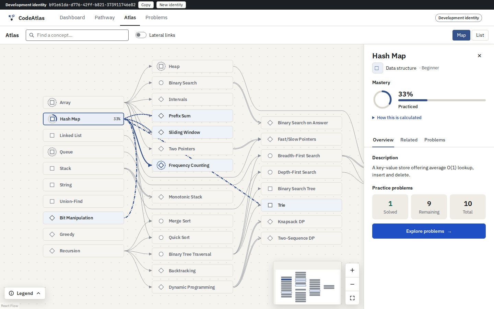
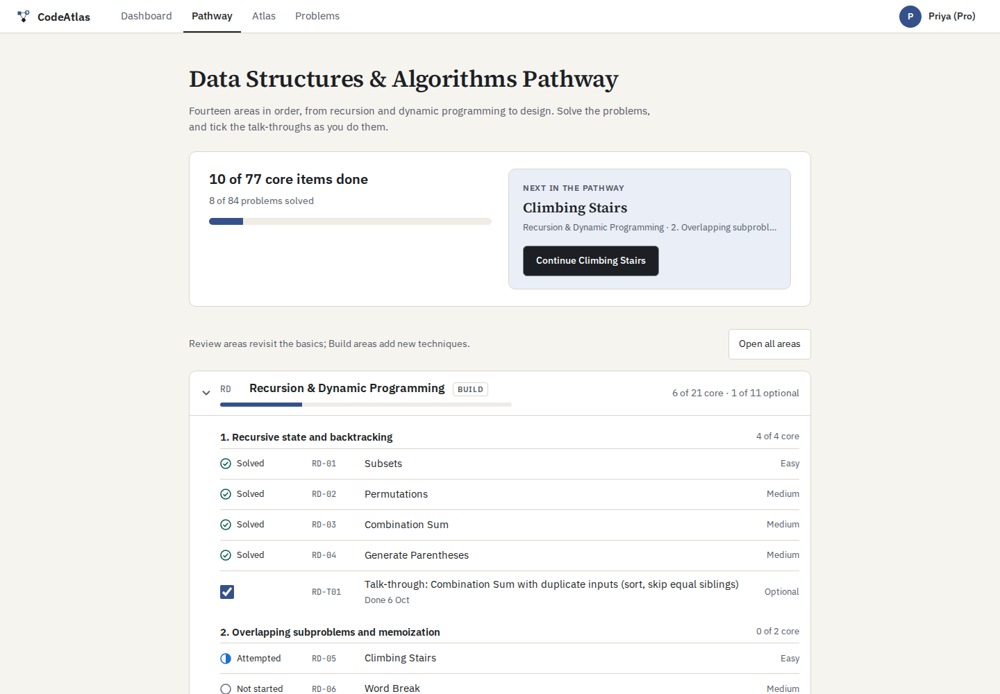
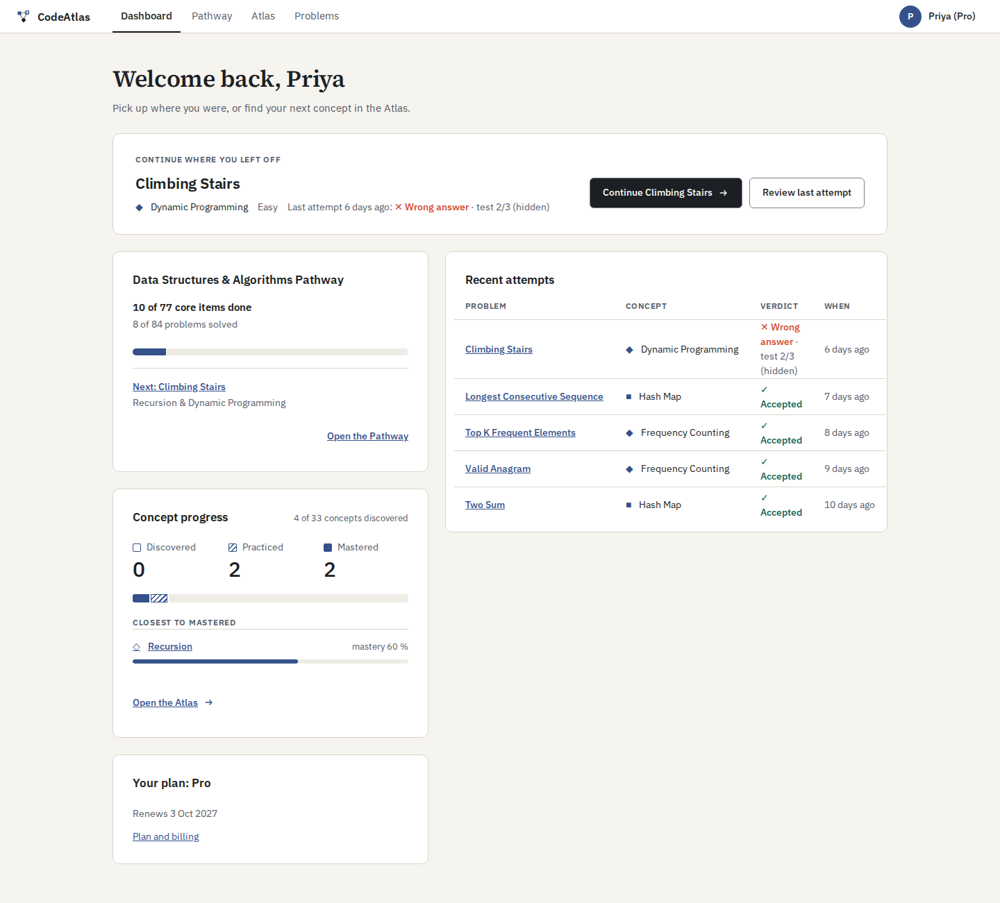

CodeAtlasSee how algorithms connect. Practice with a purpose.
CodeAtlas brings a map of algorithm concepts and a Java coding arena together. Explore a concept, solve a related problem, and see your progress reflected in the map.
Status reviewed · Local development only. Accounts are invite-only; there is no public release or hosted demo.
Inside CodeAtlas
See the map, then find your next problem.
Development previews captured in October 2026, with sample accounts and progress. The interface is still evolving. Select an image to view it at full size.
-

The Atlas connects concepts to practice. Selecting Hash Map reveals related ideas, mastery, and problems to explore. -

The Pathway brings the next problem, practice history, and study checklists together. -

The dashboard helps a learner resume practice and review recent attempts and concept progress.
Who it’s for
Learners practicing data structures and algorithms who want to understand how concepts relate, alongside solving coding problems.
What it helps you do
Choose a concept, practice Java problems, review feedback, and keep track of the skills you’ve practiced.
Where it stands
A working local development build with a concept map, coding arena, progression, and a structured pathway.
Your next step
Ask about testing opportunities. Public access and a release date have not been announced.
The learning loop
From a concept to a solution, and back to the map.
- Explore
Use the Atlas to find a concept, understand its connections, and open related practice problems. A list view offers another way to browse.
- Practice
Write Java in the coding arena. Run the examples, then submit against hidden tests for deterministic feedback from a sandboxed judge.
- Reflect
Review your attempts and return to the Atlas. Accepted solutions contribute evidence toward each concept’s mastery.
In the current build
A map, a practice space, and a path through both.
A connected Atlas
Explore concepts and their relationships, with a details panel, related problems, and your progress per concept.
A Java coding arena
Read the statement, write a solution, run examples, and submit against hidden tests. Drafts and attempt review keep your work close.
A structured DSA pathway
The local build includes 84 judged Java problems across 14 areas, with study checklists and a next item to work on.
Mastery from practice
Concept progress is based on accepted solutions, weighted by difficulty and relevance. Failed attempts don’t subtract mastery.
Your learning history
Account-based progress connects the pathway, previous attempts, and the map, so you can pick up where you left off.
Light and dark themes
The web interface supports both themes, with map and list views for exploring the Atlas.
Interested in trying CodeAtlas?
Get in touch about early testing. Access is not automatic, and there is no public sign-up or release date yet.